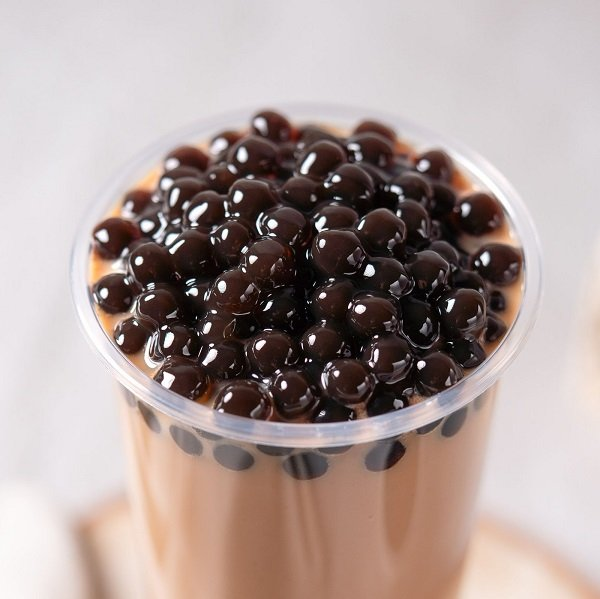
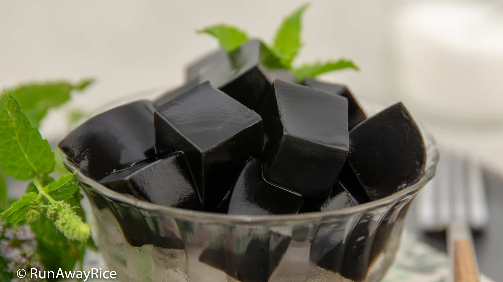
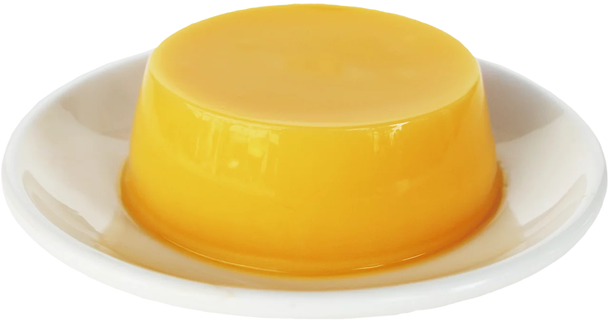

claire - Bubble Tea Toppings

In this section, we'll inform you of various toppings for your boba tea.
3 popular boba tea toppings:
- boba
- grass jelly
- pudding
here are some unordered toppings:
Images of the mentioned toppings are below



for more info, please visit the index page linked below
link to index page